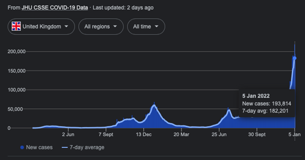
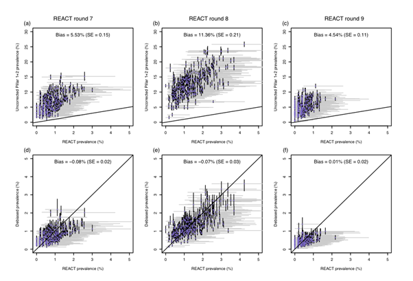
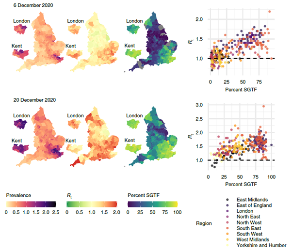

This piece was first published on the Nature Microbiology community blog
If you type ‘COVID’ followed by your country of choice into your favourite search engine, the first hit is likely to be a rolling tally of new coronavirus (SARS-CoV-2) cases. We’re now accustomed to the daily reports of new positive COVID-19 tests, and we’ve become adept at analysing the graphs showing these stats, often normalised per 100,000 of population to allow for comparison across countries and regions.

In July 2020, the then US President Donald Trump observed: “if we did half the testing, we would have half the cases.” He’s not wrong: the number of identified cases is highly dependent on the number of tests taken. A country rife with COVID-19 but with zero testing capacity might, according to this metric, appear to be having a wonderful pandemic.
Why it matters who we test
A related – but more subtle – point surrounds the question of who gets tested. Most countries have implemented targeted testing schemes, focusing their limited testing capacity on specific groups of people. For example, in England, individuals are asked to take a PCR test if they have particular symptoms (high temperature, continuous cough, or loss of taste or smell). Similarly, healthcare professionals have to get regular tests in order to protect the people they’re caring for.
These targeted groups are more likely than the overall population to test positive for COVID-19, either because they have symptoms, or because they work in care homes, hospitals etc and are at a higher risk of catching the virus. This means that the number of positive test counts isn’t necessarily an accurate reflection of the true prevalence of the virus: the proportion of the entire population infected at any particular point in time is typically less than the proportion we would infer directly from the targeted test data.
This difference can be quite extreme, with the proportion of targeted tests returning a positive result (the ‘positivity rate’) often exceeding the underlying prevalence proportion by an order of magnitude (Figure 2, top row). Despite this, targeted test data is commonly used to estimate prevalence and the now-familiar effective reproduction number, Rt (the average number of people that an infected person will go on to infect).
The benefits of randomised surveillance
In England, we are very fortunate to have not one but two national, randomised surveillance studies that measure the level of coronavirus infection in the community: the COVID-19 Infection Survey (carried out by the Office for National Statistics) and the Real-time Assessment of Community Transmission (REACT) study (Imperial College London). The randomised nature of these studies ensures that they provide representative estimates of SARS-CoV-2 prevalence across the entire population, not just among symptomatics or frontline workers.
Running these studies is expensive, however, and most of the tests will be negative by definition if the overall population prevalence is just a few percent. So, the number of positive tests returned is relatively small in comparison to the targeted testing schemes. As a result, randomised studies provide prevalence estimates that, while accurately targeting the true prevalence on average, may be highly variable when considering smaller areas.
That said, such fine-scale, localised estimates are incredibly useful for policy makers when they need to prepare resources for healthcare systems or design interventions to control the spread of disease, such as increases in testing capacity or social restrictions.
Our quest for accurate and fine-scale prevalence estimates
In our work, recently published in Nature Microbiology, we sought to combine the targeted test counts with data from randomised surveillance studies, to provide debiased, local, weekly estimates of SARS-CoV-2 prevalence. We did so through a causal statistical framework that estimates the probability of an infected person being tested versus a non-infected person being tested, and then transforms targeted test counts appropriately to generate debiased estimates of the true underlying local prevalence.
Inference for this model consisted of four steps. First, we inferred weekly prevalence at a coarse geographic level from the randomised testing data. Second, we combined this prevalence with the targeted testing data to get an estimate of the probability of an infected person being tested, again at the coarser spatial scale. Third, we smoothed these estimates longitudinally, working under the assumption that the probability an infected person gets tested only varies a little from week to week. Finally, we used these smoothed estimates to infer local (finer geographical scale) prevalence from the targeted test counts.
Figure 2 shows our statistical framework in action. The top row of panels shows the uncorrected test positivity rate against REACT prevalence estimates for the 311 local authorities in England, illustrating how test positivity was upwardly biased. The bottom row of panels shows how our prevalence estimates are unbiased relative to the REACT estimates.

We can also use our framework to estimate the effective reproduction number Rt in different local authorities. We do this by fitting an epidemic model to the debiased data, which allows us to track the state of individuals from ‘susceptible’ to ‘infected’ to ‘recovered’ (known as an SIR model). We found that local estimates of Rt were indicative of one- to two-week-ahead changes in the number of positive tests, and that increases in estimated local prevalence and Rt reflected the spread of both the Alpha and Delta variants of the virus. Figure 3 uses our data to show the spread of the Alpha variant in December 2020.

Our work demonstrates how randomised surveys such as REACT can complement targeted testing to improve statistical accuracy in monitoring the spread of COVID-19. We believe that the international response to the current pandemic, as well as preparedness for future ones, can benefit from surveillance schemes that combine random sampling with targeted testing in this way. Used together, these techniques will provide a powerful way of keeping track of emerging and ongoing infectious diseases.